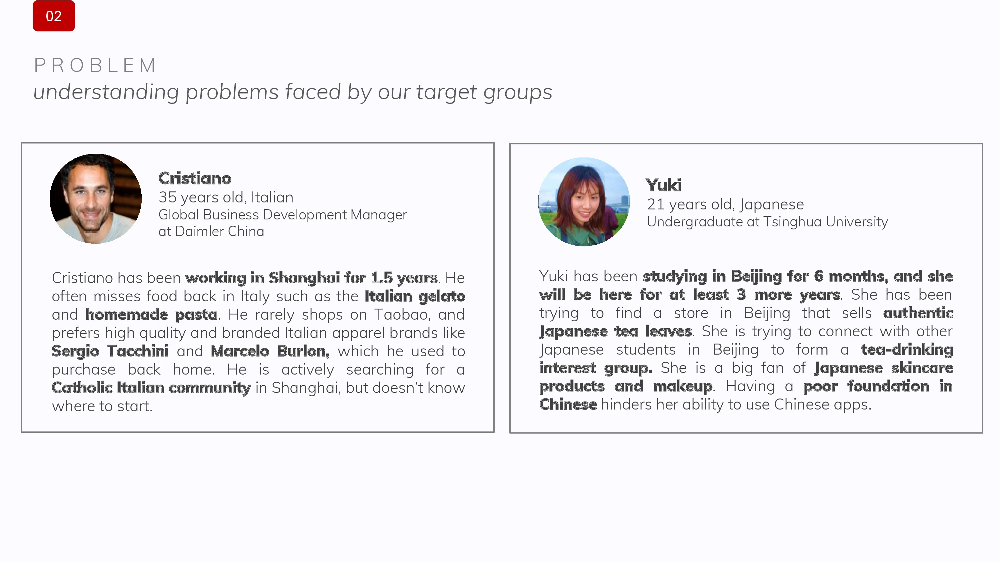
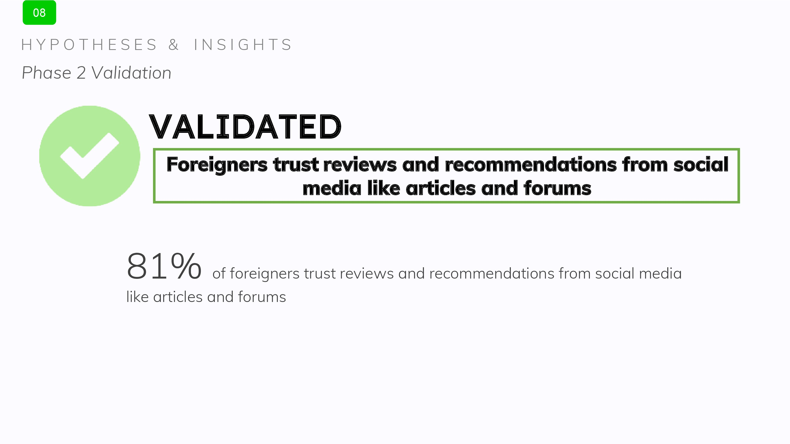
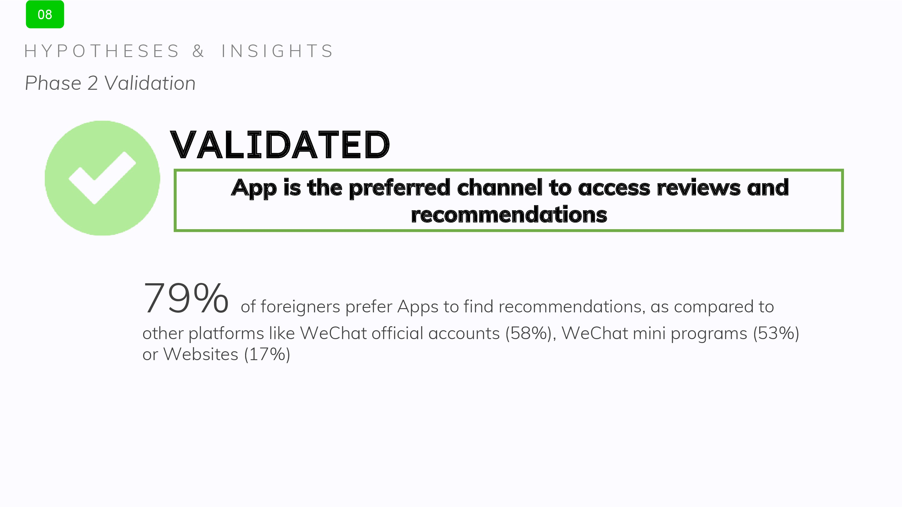

<!DOCTYPE html>
<html lang="en">
    </html>

<head>
    <meta charset='utf-8'>
    <meta name="viewport" content="width=device-width, initial-scale=1.0">
    <link rel="stylesheet" href="../../style.css">
    <link rel="stylesheet" href="https://use.fontawesome.com/releases/v5.7.2/css/all.css">
    <link rel="apple-touch-icon" sizes="180x180" href="photo/apple-touch-icon.png">
    <link rel="icon" type="image/png" sizes="32x32" href="photo/favicon-32x32.png">
    <link rel="icon" type="image/png" sizes="16x16" href="photo/favicon-16x16.png">
    <link rel="manifest" href="/site.webmanifest">   
    
    <title>Wee Yong Jie | Dr Tako</title>
</head>

    <body>
        <nav role='navigation'>
            <div id='menuToggle'>
                <input type='checkbox' />
                <span></span>
                <span></span>
                <span></span>
                    <ul id='menu'>
                        <li><a href='../../index.html'>About</a></li>
                        <li><a href='../../portfolio.html'>Portfolio</a></li>
                        <li><a href='../../life.html'>Life</a></li>
                    </ul>
            </div>
        </nav>

        <div class='portfolio-inside-image'>
            <p class='portfolio-inside-title'>WeConnect - Community-Building App for Expats</p>
        </div>
    
    <div class='portfolio-inside-description'>
            <p>
                WeConnect is an idea that my friends and I came up with while we were in Beijing for our 1 Year NOC Programme. Being 'expats' in a foreign country, we find it 
                very difficult to find information on retail and food as we were unfamiliar with their hyper-digitalised economy and to a smaller extent the language barrier 
                as Mandarin in China is a huge step up from the Mandarin we are familiar with in Singapore.
                <br><br>
                Furthermore, while we were fortunate to be on a programme where we 
                were able to go there in a group and have support from seniors who have already settled down in Beijing, we realised many foreigners actually travel to Beijing 
                alone and crave for the familiar connections with people from their native country. As such, we prototyped WeConnect, an app that will build a strong community among 
                the expats in Beijing and also allow to have an easier time settling into a new city.
            </p>
        </div>
    
    <div class='portfolio-inside-many-photos'>
            
            
            
            
            
            
            
            
            
            
            
            
            
            
            
            
            
            
            
            
            
            
            
            
            
            
            
            
            
            
            
            
            
            
            
            
            
            
            
            
            
            
            
            
            
            
            
            
            
            
            
            
            
            
            
            
            
            
            
            
            
        </div>

    <hr>

    <div class='container_row'>
        <div class='container_column'> <p><b>Contact</b></p> <p>Email: weeyongjie@u.nus.edu</style></div>
        <div class='container_column'><p><b>Follow Me</b> <br> <br>
            <a style="padding-right:12px;" href='https://www.linkedin.com/in/wee-yong-jie/'><i class="fab fa-linkedin-in" style='color:#1B1B1B'></i></a>
            <a style="padding-right:12px;" href='https://medium.com/@weeyongjie'><i class="fab fa-medium-m" style='color:#1B1B1B'></i></a>
            <a style="padding-right:12px;" href='https://www.facebook.com/yongjie.wee.1996/'> <i class="fab fa-facebook-f" style='color:#1B1B1B'></i></a>
            <a style="padding-right:12px;" href='https://www.instagram.com/yj_wee/'> <i class="fab fa-instagram" style='color:#1B1B1B'></i></a>
            </p> 
            </div>
        <div class='container_column'><p><i style='line-height: 30px' style='letter-spacing: 0.1em;'>“A person who is happy is not because everything is right in his life,
             he is happy because his attitude towards everything in his life is right.” 
                                    <br>- Sundar Pichai</i></p></div>
    </div>
       
    </body>